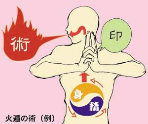
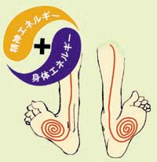
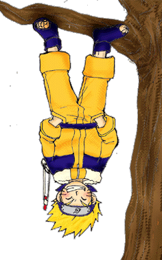

チャクラの巻
◎チャクラとは？
| チャクラとは忍が・術・を使うときに必要とするエネルギー の亊である。そのエネルギーはおおまかに ・人体におよそ１３０兆個存在すると言われる細胞の 一つ一つからかき集めて生み出す・身体エネルギー・と、 ・多くの修業や経験によって積み上げられる・精神エネルギー・ の２つで構成されている。 つまり・術・というものは、この２つのエネルギーを体内から 絞り出し、練り上げ(これを・チャクラを練る・という）、 意志である・印を結ぶ・というプロセスをたどってやっと 発動されるというわけである。 （左図は「火遁の術」発動の例） ※わからなかったら何度でも読む！！ |
 |
◎チャクラを上達させるには？
| チャクラを上達させるには、どんな修業をすれば いいのか？ それは木登りすることである。 木登りと言っても手を使わずに登るのである。 チャクラを足の裏に集め木の幹に吸着させると 右図のナルトのように足だけで垂直に木に登れる これがどのようにチャクラの上達に関わるかというと まず第一にチャクラの・コントロール・を身に付けることが出来る。 練り上げたチャクラを必要な分だけ、必要な箇所に、 これが術を使うにあたり、最も肝心なことで、 熟練の忍者でも案外難しいのである。 この・木登り・において練り上げなくてはならない チャクラの量は極めて微妙、更に足の裏はチャクラを 集めるのが最も困難な部位とされている。 つまりこの・コントロール・を極めれば理論上どんな 術も体得可能というわけである。  |
 |
|
|
第二に、足の裏に集めたチャクラを維持することによって・スタミナ・を身に付けることが出来る。 様々な術に応じてバランスよく・コントロール・されたチャクラをそのまま維持することは、もっと難しい。 その上忍者がチャクラを練るのは絶えず動き続けなくてはならない戦闘中が殆どである。 そのような状況下ではチャクラの・コントロール・と・スタミナ・を持続させることはさらに困難を極める。 だからこそ木に登りながらチャクラのノウハウを習得する修業するのである。 |
||
Source: http://www.interq.or.jp/dog/chobi/aka/tyaku/tyaku.html